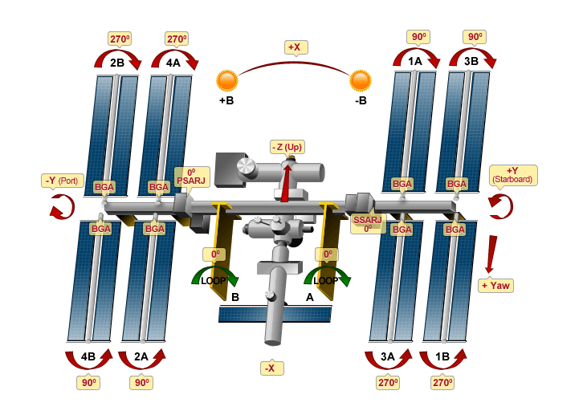

Each array is mounted on an accordion-folded racking system designed to be transported into orbit compressed and then unfolded to its full length when deployed. These fold-out racks of panels are referred to as “blankets.” The station began its life with just one set of blankets, and now has four sets, the latest having been installed in 2009.
Because of the constant and rapid changing position of the station in its elliptical orbit, the racks include gimbals that continually rotate the panels to face the sun. Similar to a dual-axis tracker used here on Earth to track the sun at both time of day and time of year, The ISS system uses an “alpha” gimbal to track the position of the sun while the “beta” gimbal adjusts to compensate for the elliptical orbit.
